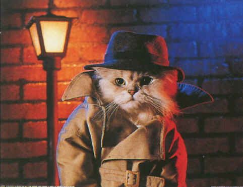
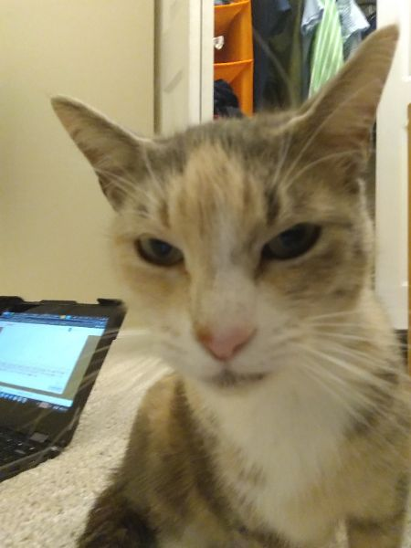

Whiskers McSneaky: The Purr-fect Detective!
Meet Detective Whiskers, the smartest cat on the streets. With his cool hat and coat, he’s always ready to solve mysteries. Lost your keys? Detective Whiskers is on the case! Need help finding your snacks? He’s got you covered... as long as they aren’t tuna. He might look serious, but he’s just a cat who loves solving problems and taking long naps between cases.
Fluffy the Sleepy, Clumsy Cutie!
This is Fluffy, the cutest little ball of fluff you’ll ever meet. With a soft pink hat and tiny paws, she loves to wander around... but watch out! She’s a bit clumsy and often trips over her own feet. Her favorite activity? Napping all day long, of course! When she’s not dozing off, she’s either eating or looking for the best nap spots in the house.
Codey the Confused Coder: Debugging Life One Line at a Time!
Meet Codey the Cat, the feline programmer. Today, Codey is feeling... well, a bit skeptical. After spending hours debugging and staring at lines of code, she’s starting to question everything. "Am I even learning the right language?" she wonders. With those suspicious eyes and serious face, Codey is ready to refactor her life choices... or maybe just take a nap.
